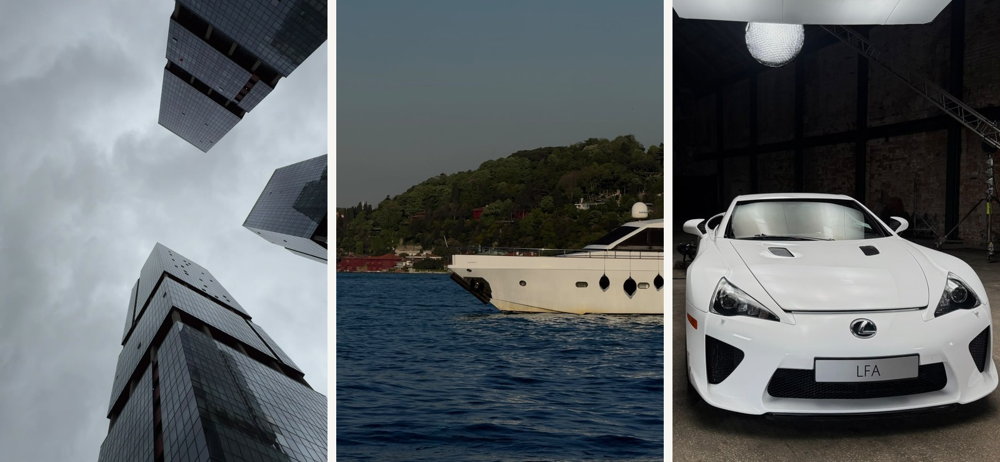

Bakmak başka, görmek başka.
Bir yapı çizgisi, otomobilin yüzeyindeki ışık, suyun hareketi veya sıradan bir nesnenin dokusu. Æsthetic, günlük hayatın içinde dikkatimi çeken ayrıntıları bir araya getirdiğim kişisel fotoğraf arşividir.

Kadrajın dili
Bu arşivde konu kadar, konunun nasıl görüldüğü de önemli. Keskin mimari çizgiler, koyu tonlar, tekrarlayan formlar ve doğal ışığın oluşturduğu değişim, seçkinin ortak görsel dilini oluşturuyor.
İlgi alanlarım
- Mimari perspektif, cepheler ve geometrik düzen
- Otomobil tasarımı, yüzeyler ve mekanik ayrıntılar
- İstanbul, su, sokak ve gündelik yaşam
- Nesne fotoğrafçılığı ve yakın plan kompozisyonlar
Bir kareyi seçerken
- Işık ve gölge dengesine bakarım.
- Ana formu ve kadrajın yönünü belirlerim.
- Gereksiz görsel kalabalığı dışarıda bırakırım.
- Son karede ayrıntının bütünle kurduğu ilişkiyi değerlendiririm.
Arşivden üç kare
Fotoğraf arşivinin farklı yönlerini temsil eden kısa bir seçki.